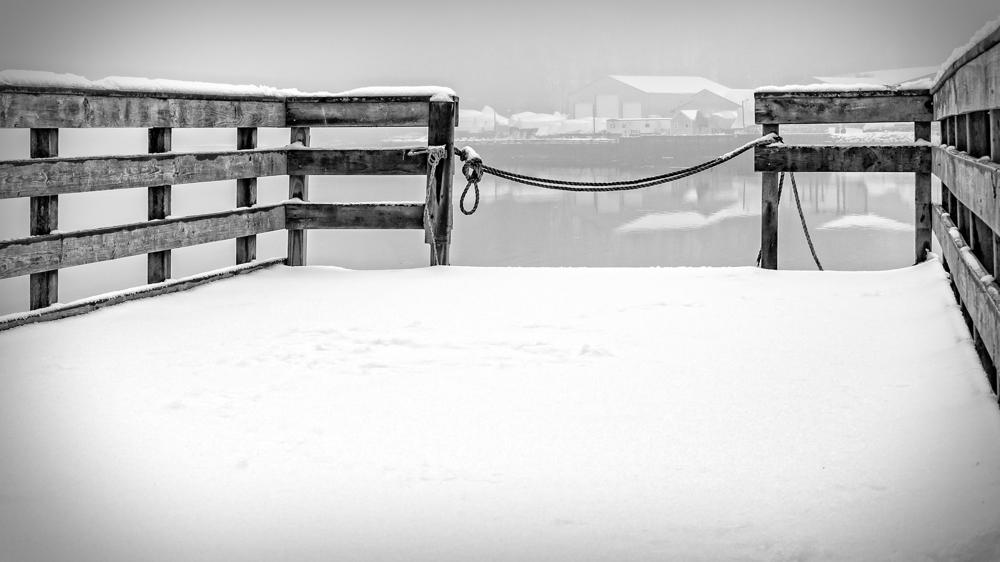
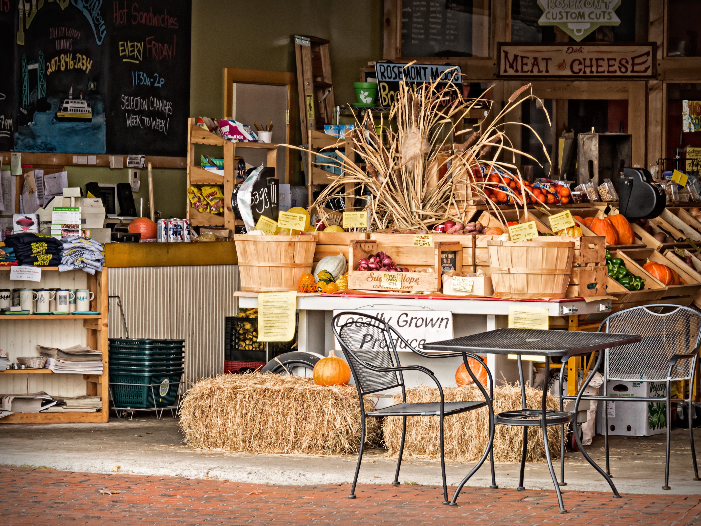

Welcoming photography enthusiasts of all levels since 1899

"Image Title", Submitted by: Maker's Name
The Value of Competition
Competitions are one of the club's major activities. They provide a way for members to learn and grow as photographers, as well as the opportunity to observe the work of fellow members. Participation in competitions is optional. Refer to the club calendar for a complete listing of competition dates.
Scoring
On competition night, each image is scored by 3 judges (volunteer club members). Prize ribbons for 1st, 2nd and 3rd place, and Honorable Mention are awarded at each competition, based on the scores given by the judges. In addition, scores are tallied throughout the club year. In May, total points determine the winners for 1st, 2nd and 3rd place for the year, with special prizes awarded at the club banquet.
During a competition, each judge scores the image with a range of 2-10. A high score reflects the judge's' opinion that the image is outstanding. The total score from all 3 judges combined can range from 6 to 30.
If the 3 judges' scores have a 3-point difference (3 or more), the judges will have a discussion about the image and re-score the image. The second set of scores will be recorded for the image. For example, if an image receives a 6, 8 and 9, the judges will have a discussion because the scores have a 3-point difference between the lowest, 6, and the highest, 9. After the discussion, the judges will score again and the second set of scores will be recorded for the image.
With 11 competitions per year (6 for prints + 5 for digital images), the club enlists 33 volunteer judges. Judges are allowed to participate in competitions. When a judge's own image is displayed for scoring, that judge does not score the image; instead, the scores of the other two judges are averaged to arrive at a third score. This policy also applies if a judge was involved in preparing or enhancing the image (e.g., if the judge helped the maker to modify the image in Photoshop).
Important: When submitting your images for a competition, please remember:
Judges are club members who have volunteered to do the job.
Judges know their responsibility to score as fairly as they can.
Judges are evaluating works of art and may see qualities and flaws differently than you do. Inevitably, some scores will surprise, disappoint or just plain confound you.
Everyone is asked to be respectful of the judges who have volunteered on competition night.

"At The Market", Joanne Smith
Projected Images
The first Monday of each month from October through May will be devoted to Projected Images. Of these eight meeting nights, five will be competitions and three will be non-competition, open discussion sessions (for specific dates, see the club calendar).
Projected Image Competition Rules and Guidelines
Members (dues paid) may submit one or two digital images in .jpg format per the procedure described below (see How To Prepare a JPG File).
For competitions, you may mark one entry with the letter "C" indicating a desire to have that image critiqued by the judges. For example, name your file C-Mary-Dumont-B-Acadia-Spring.jpg. When judging and scoring tabulations are complete, the judges will critique each image that was submitted with a letter "C" as well as each image that received a 1st, 2nd, or 3rd place award.
Two of the year's PI Competitions will have an assigned subject. For 2015-16, the subjects are "Motion Blur" and "Rain, Fog or Atmospheric Conditions." The dates of the two competitions with assigned subjects will be posted on this site's calendar. Note: for competitions with an assigned subject, your entries must have been taken after May 18, 2015. (The taken-after-May-18th requirement only applies when there is an assigned subject. When there is no assigned subject, your entries can have been taken at any time.)
Competition Deadlines: the deadline for submitting images for competitions is midnight of the Friday before the competition. Images received after the deadline will automatically be added to the next competition, where the late images will be shown and judged separately from that month's images. The scores earned from late images will be added to the maker's year-end points total. Ribbons will not be awarded to late images nor will judges give verbal critiques for late images. EXCEPTION: late images will not be accepted after the deadline for May, which is the last competition of the Club season.
If you have a question about Projected Image Competitions, please contact the Projected Image Competitions chair, Al Spencer: kaspencerjr@hotmail.com
Projected Image Discussions
These three nights are devoted not to competition but to open discussion of images submitted by members. Each member may submit one image for Discussion Night. Follow the procedure described in "How To Prepare a JPG File".
Images will be displayed on screen in no particular order. A facilitator/moderator will gently guide us through an investigation of the image's strengths and suggestions for improvement. Questions regarding technique, hardware, software, etc. are welcome. These sessions are designed to fully explore each image in a positive, constructive, respectful manner in a non-competitive environment, leaving the image-makers and the audience/participants with a deeper knowledge and understanding of their art.
Print Competitions
Print Night is second Monday of the month from October through May.
Prints can be from any source: film negatives, slides, or a digital camera or scanner. Print processing can be done by the photographer (e.g., using an inkjet printer) or a commercial lab. A member may submit 2 prints for competition.
One of the year's Print Competitions will have an assigned subject: "Song Titles." The date of the Song Titles Print Competition will be posted on this site's calendar. For competitions with an assigned subject, your entries must have been taken after May 18, 2015. (The taken-after-May-18th requirement only applies when there is an assigned subject. When there is no assigned subject, your entries can have been taken at any time.)
Makeups: If a maker cannot get his or her entries to a competition by the deadline, the maker can enter them in the next competition, but not later than the next competiton.
In addition to the Print Night Competitions, there will be three discussion nights. On discussion nights, there will not be any judging. Members are invited to submit one print on discussion night. Prints will be discussed and critiqued. This is a forum for Q&A and constructive criticism.